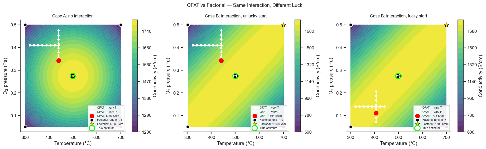

16. Introduction to Design of Experiments#
Design of Experiments (DoE) is a systematic framework for planning experiments so that the data yield the maximum amount of information with the minimum number of runs.
Topics
Why not One-Factor-At-a-Time (OFAT)?
Key terminology: factors, levels, runs, responses, design space
Types of designs and when to use them
The DoE workflow
Coding variables (–1, 0, +1)
import numpy as np
import pandas as pd
import matplotlib.pyplot as plt
import matplotlib.patches as mpatches
import seaborn as sns
sns.set_theme(style='ticks', palette='colorblind')
plt.rcParams.update({'figure.dpi': 110, 'font.size': 11})
rng = np.random.default_rng(7)
16.1 OFAT vs Factorial — A Simulation#
The everyday instinct when optimising a synthesis is to change one thing at a time: fix everything else, vary temperature until it looks best, then fix temperature and vary the next factor. This is called One-Factor-At-a-Time (OFAT). It feels safe and logical — so what’s wrong with it?
The problem is interaction: the best temperature might be different depending on which oxygen pressure you happen to have fixed while you were testing temperature. If you tested temperature at the “wrong” pressure, you may lock in a temperature that is not actually the best one once pressure is also optimised. A factorial design avoids this trap by changing several factors together, in a structured pattern, so that the data reveal not just each factor’s own effect but also whether the factors influence each other.
Consider optimising the conductivity of a sol-gel ITO thin film by varying two factors:
Temperature — 300–700 °C
Oxygen partial pressure — 0.05–0.5 Pa
To compare the two strategies fairly, we simulate a known underlying “true” response surface (something you would never actually know in a real experiment — here we use it only so we can check which strategy gets closer to the real optimum), working directly in the −1-to-+1 coded units Section 16.3 formalises shortly, so that a temperature swing and a pressure swing are on the same footing when we compare their effects:
Conductivity peaks somewhere in the middle of both ranges, and \(\gamma\) — the coefficient on the cross term \(x_1 x_2\) — controls how strongly temperature and pressure interact: \(\gamma=0\) means the best temperature never depends on pressure at all; the closer \(\gamma\) gets to its mathematical limit here (600), the more strongly it does. We will run this simulation twice: once with no interaction, once with a real one — and in the second run, from two equally plausible starting guesses — to see exactly when, and why, OFAT gets into trouble.
OFAT (one factor at a time): hold one factor at its default while varying the other. Factorial: vary both factors simultaneously.
def conductivity(T, P, gamma=0, noise=0):
"""Coded units (Section 16.3 formalises this scheme): x1, x2 run from
-1 to +1 across the T and P ranges, so a temperature swing and a
pressure swing are on the same footing before gamma compares them."""
x1 = (T - 500) / 200
x2 = (P - 0.275) / 0.225
return 1800 - 300*x1**2 - 300*x2**2 + gamma*x1*x2 + noise
T_grid = np.linspace(300, 700, 200)
P_grid = np.linspace(0.05, 0.5, 200)
TT, PP = np.meshgrid(T_grid, P_grid)
def true_optimum(gamma):
grid = conductivity(TT, PP, gamma)
idx = np.unravel_index(np.argmax(grid), grid.shape)
return grid.max(), TT[idx], PP[idx]
true_val, T_true_opt, P_true_opt = true_optimum(0)
print(f'True optimum (same location regardless of interaction strength): '
f'{true_val:.0f} S/cm at T={T_true_opt:.0f}°C, P={P_true_opt:.3f} Pa')
def run_ofat(gamma, T_default, P_default, T_half=60, P_half=0.0675):
"""A modest, realistic step around current practice for each factor --
not the whole practical range in one go."""
T_scan = np.linspace(max(300, T_default-T_half), min(700, T_default+T_half), 8)
sigma_T = conductivity(T_scan, P_default, gamma, rng.normal(0, 20, 8))
best_T = T_scan[np.argmax(sigma_T)]
P_scan = np.linspace(max(0.05, P_default-P_half), min(0.5, P_default+P_half), 8)
sigma_P = conductivity(best_T, P_scan, gamma, rng.normal(0, 20, 8))
best_P = P_scan[np.argmax(sigma_P)]
return {'best_T': best_T, 'best_P': best_P,
'best_val': conductivity(best_T, best_P, gamma),
'T_scan': T_scan, 'P_default': P_default, 'P_scan': P_scan}
def run_factorial(gamma):
T_levels, P_levels = [300, 500, 700], [0.05, 0.275, 0.5]
runs = []
for T_val in (T_levels[0], T_levels[2]):
for P_val in (P_levels[0], P_levels[2]):
runs.append((T_val, P_val, conductivity(T_val, P_val, gamma, rng.normal(0, 20))))
for _ in range(3):
runs.append((T_levels[1], P_levels[1],
conductivity(T_levels[1], P_levels[1], gamma, rng.normal(0, 20))))
df = pd.DataFrame(runs, columns=['T', 'P', 'sigma'])
return df, df['sigma'].idxmax()
True optimum (same location regardless of interaction strength): 1800 S/cm at T=499°C, P=0.274 Pa
Case A: No Interaction#
With \(\gamma=0\), does OFAT even need factorial’s help? Starting from a current-process guess of T=380 °C, P=0.41 Pa — some way from the true optimum in both factors — scan temperature first, then pressure, exactly as the OFAT recipe describes.
print('Case A -- no interaction (gamma=0), starting from T=380°C, P=0.41 Pa')
ofat_A = run_ofat(0, 380, 0.41)
fact_A_df, fact_A_idx = run_factorial(0)
fact_A_best = fact_A_df.loc[fact_A_idx, 'sigma']
print(f"OFAT best (16 runs): {ofat_A['best_val']:.0f} S/cm "
f"({100*ofat_A['best_val']/true_val:.1f}% of optimum) "
f"at T={ofat_A['best_T']:.0f}°C, P={ofat_A['best_P']:.3f} Pa")
print(f"Factorial best (7 runs): {fact_A_best:.0f} S/cm "
f"({100*fact_A_best/true_val:.1f}% of optimum)")
Case A -- no interaction (gamma=0), starting from T=380°C, P=0.41 Pa
OFAT best (16 runs): 1746 S/cm (97.0% of optimum) at T=440°C, P=0.342 Pa
Factorial best (7 runs): 1795 S/cm (99.7% of optimum)
Take-home message
With no interaction, OFAT reaches 97.0% of the true optimum from a starting guess that wasn’t close in either factor — not far behind the factorial’s 99.7%, using the same total run count either way. This is the direct answer to “does OFAT work fine when there’s no correlation between factors?”: broadly, yes — each one-factor-at-a-time scan lands close to that factor’s own true optimum, because a factor’s own optimum genuinely doesn’t depend on where the other factor happens to be fixed.
The remaining ~3% gap isn’t from interaction at all (there is none, by construction) — it’s simply that a modest, realistic step around current practice doesn’t cover the space as thoroughly as factorial’s runs, spread deliberately across the full range. That’s a real but small cost, nothing like what’s coming next.
Case B: A Real Interaction — Same Process, Different Luck#
Now set \(\gamma=580\) — a strong, genuine interaction, just below the point where the surface would stop having a single well-defined peak at all. Keep the same starting temperature (380 °C) used in Case A, so temperature alone isn’t what changes below — only which pressure the process happened to be running at when the OFAT campaign started:
Unlucky start: P=0.41 Pa — the same starting pressure as Case A.
Lucky start: P=0.14 Pa — an equally plausible guess; nothing about “current practice” tells you in advance which of these two you’d actually be starting from.
print('Case B -- a real interaction (gamma=580); same starting temperature,')
print('two equally plausible starting pressures')
ofat_B_unlucky = run_ofat(580, 380, 0.41)
ofat_B_lucky = run_ofat(580, 380, 0.14)
fact_B_df, fact_B_idx = run_factorial(580)
fact_B_best = fact_B_df.loc[fact_B_idx, 'sigma']
print(f"OFAT, unlucky start (P=0.41 Pa): {ofat_B_unlucky['best_val']:.0f} S/cm "
f"({100*ofat_B_unlucky['best_val']/true_val:.1f}%) "
f"at T={ofat_B_unlucky['best_T']:.0f}°C, P={ofat_B_unlucky['best_P']:.3f} Pa")
print(f"OFAT, lucky start (P=0.14 Pa): {ofat_B_lucky['best_val']:.0f} S/cm "
f"({100*ofat_B_lucky['best_val']/true_val:.1f}%) "
f"at T={ofat_B_lucky['best_T']:.0f}°C, P={ofat_B_lucky['best_P']:.3f} Pa")
print(f"Factorial (7 runs): {fact_B_best:.0f} S/cm "
f"({100*fact_B_best/true_val:.1f}%)")
Case B -- a real interaction (gamma=580); same starting temperature,
two equally plausible starting pressures
OFAT, unlucky start (P=0.41 Pa): 1694 S/cm (94.1%) at T=440°C, P=0.342 Pa
OFAT, lucky start (P=0.14 Pa): 1773 S/cm (98.5%) at T=406°C, P=0.111 Pa
Factorial (7 runs): 1809 S/cm (100.5%)
Take-home message
Same interaction, same starting temperature, only the starting pressure differs — and the two OFAT outcomes diverge sharply: 94.1% of the true optimum from the unlucky start, 98.5% from the lucky one. Nothing about either starting guess looked more reasonable than the other beforehand; the difference is pure luck, driven entirely by which side of the interaction that guess happened to sit on.
Factorial’s result (100.5%) barely moves between the two scenarios — it doesn’t depend on a starting guess at all, because its four corners already sample both sides of the interaction every time, regardless of where “current practice” happens to be. That is the real argument for factorial designs: not a guaranteed bigger margin on any one run (Case A already showed OFAT can do fine), but immunity to exactly the kind of luck that separates a 94% OFAT result from a 98% one here — and it does this in 7 runs to OFAT’s 16, so it is not just more reliable, it is also cheaper.
Look at the middle and right panels below: the contours are now visibly tilted, not the simple bullseye of Case A — that tilt is the interaction, and it is exactly what lets one starting guess succeed and an equally sensible one fail.
sigma_grid_A = conductivity(TT, PP, 0)
sigma_grid_B = conductivity(TT, PP, 580)
T_pad = 0.05 * (T_grid.max() - T_grid.min())
P_pad = 0.05 * (P_grid.max() - P_grid.min())
def jitter_centre(df):
# The 3 centre-point replicates sit at *exactly* the same conditions and
# would overlap into a single dot -- nudge them apart in a tiny triangle,
# for display only; the data used for analysis (df) is untouched.
centre_mask = ((df['T'] == 500) & (df['P'] == 0.275)).values
angles = np.linspace(0, 2*np.pi, centre_mask.sum(), endpoint=False)
T_disp = df['T'].values.astype(float).copy()
P_disp = df['P'].values.astype(float).copy()
T_disp[centre_mask] += 0.015 * (T_grid.max() - T_grid.min()) * np.cos(angles)
P_disp[centre_mask] += 0.015 * (P_grid.max() - P_grid.min()) * np.sin(angles)
return T_disp, P_disp
fig, axes = plt.subplots(1, 3, figsize=(17, 5.2))
panels = [
('Case A: no interaction', sigma_grid_A, ofat_A, fact_A_df, fact_A_idx, fact_A_best),
('Case B: interaction, unlucky start', sigma_grid_B, ofat_B_unlucky, fact_B_df, fact_B_idx, fact_B_best),
('Case B: interaction, lucky start', sigma_grid_B, ofat_B_lucky, fact_B_df, fact_B_idx, fact_B_best),
]
for ax, (title, grid, ofat, fact_df, fact_idx, fact_best) in zip(axes, panels):
contf = ax.contourf(TT, PP, grid, levels=20, cmap='viridis', alpha=0.85)
plt.colorbar(contf, ax=ax, label='Conductivity (S/cm)')
ax.plot(ofat['T_scan'], [ofat['P_default']]*len(ofat['T_scan']),
'w-o', ms=5, lw=1.8, label='OFAT — vary T')
ax.plot([ofat['best_T']]*len(ofat['P_scan']), ofat['P_scan'],
'w--^', ms=5, lw=1.8, label='OFAT — vary P')
ax.scatter(ofat['best_T'], ofat['best_P'], s=110, c='red', zorder=5,
label=f"OFAT: {ofat['best_val']:.0f} S/cm")
T_disp, P_disp = jitter_centre(fact_df)
ax.scatter(T_disp, P_disp, c='black', s=70, edgecolors='white',
linewidths=1.3, zorder=4, label='Factorial runs (n=7)')
best_row = fact_df.loc[fact_idx]
ax.scatter(best_row['T'], best_row['P'], s=130, c='gold', marker='*',
zorder=6, edgecolors='black', linewidths=0.6,
label=f'Factorial: {fact_best:.0f} S/cm')
ax.scatter(T_true_opt, P_true_opt, s=180, c='none', marker='o',
edgecolors='lime', linewidths=2.2, zorder=7,
label='True optimum')
ax.set_xlim(T_grid.min() - T_pad, T_grid.max() + T_pad)
ax.set_ylim(P_grid.min() - P_pad, P_grid.max() + P_pad)
ax.set_xlabel('Temperature (°C)')
ax.set_ylabel('O$_2$ pressure (Pa)')
ax.set_title(title, fontsize=10.5)
ax.legend(fontsize=7, loc='lower right', framealpha=0.9)
sns.despine(ax=ax)
plt.suptitle('OFAT vs Factorial — Same Interaction, Different Luck', fontsize=12)
plt.tight_layout()
plt.show()

Reading the Three Panels#
Left (no interaction): contours form simple, concentric circles — the peak’s location along one axis genuinely does not depend on the other, so OFAT’s staircase path (white markers) lands close to the true optimum (green circle) even from an off-centre start.
Middle and right (with interaction, two starting guesses): the contours tilt into a diagonal ridge — now which temperature is best depends on which pressure you’re at, and vice versa. The middle panel’s OFAT path gets pulled toward a mediocre point; the right panel’s — same interaction, same starting temperature, only the starting pressure differs — reaches almost the same point the factorial star finds.
Black dots with a gold star (factorial): the same seven runs, spread across combinations of both factors at once, land in the same place in every panel — because, unlike OFAT, they never depended on a starting guess to begin with.
Green circle (true optimum): shown here only so you can judge, for each strategy, how close its result landed to the real answer — never available in a real experiment.
This is the core justification for everything else in Part V: a small, structured set of experiments beats the same style of one-at-a-time trial, not because it is guaranteed to win by more on any single run, but because its outcome does not depend on a piece of luck you have no way to control for in advance.
16.2 Key Terminology#
Term |
Definition |
Example |
|---|---|---|
Factor |
Controllable input variable |
Temperature, pressure, composition |
Level |
Specific value of a factor |
Low (–1), Centre (0), High (+1) |
Response |
Measured output |
Conductivity, strength, yield |
Run |
One experimental trial |
Single sintering experiment |
Effect |
Change in response per unit change in factor |
ΔT effect on grain size |
Interaction |
Effect of one factor depends on another |
T × P interaction in ITO |
Design space |
Region of factor space being explored |
T ∈ [300,700], P ∈ [0.05,0.5] |
Centre point |
Middle of the design space |
T=500, P=0.275 |
16.3 Variable Coding#
Notice that in the terminology table above, “level” was described as Low (–1), Centre (0), High (+1) — not as “300 °C” or “0.05 Pa”. This relabelling is called coding, and it is used throughout DoE for a simple reason: a 50 °C change and a 0.05 Pa change are not directly comparable in size, but a change from –1 to +1 means the same thing (the full range of the factor) no matter which factor you are looking at. Coding puts every factor on the same footing before you compare their effects.
Coded variables map the natural range to [−1, +1]:
In words: find how far your value is from the centre of the range, then express that distance as a fraction of the half-range. A value at the centre becomes 0; a value at the high end becomes +1; a value at the low end becomes −1. Coding has two practical advantages: (1) effect sizes become directly comparable regardless of the original units; (2) it keeps the numbers that go into the model-fitting calculation small and of similar magnitude, which makes the fit more numerically stable — the same reason you would not want to fit a model using raw temperatures in Kelvin.
def code(x, low, high):
centre = (low + high) / 2.0
delta = (high - low) / 2.0
return (x - centre) / delta
# Example: T in [300, 700] → coded x1 in [−1, +1]
T_natural_examples = np.array([300, 400, 500, 600, 700])
x1_coded = code(T_natural_examples, 300, 700)
summary = pd.DataFrame({'T_natural (°C)': T_natural_examples, 'x1 (coded)': x1_coded})
print(summary.to_string(index=False))
T_natural (°C) x1 (coded)
300 -1.0
400 -0.5
500 0.0
600 0.5
700 1.0
16.4 Types of Designs#
Different stages of an investigation call for different designs — think of it as a funnel that gets progressively more detailed and expensive as you narrow in on the answer: first screen many candidate factors cheaply, then build a detailed map only around the factors and region that matter.
Design |
Purpose |
Typical runs |
|---|---|---|
Full factorial 2ᵏ |
Estimate all main effects and interactions |
2ᵏ + centre pts |
Fractional factorial 2^(k–p) |
Screening — many factors, fewer runs |
2^(k–p) |
Plackett-Burman |
Screening — up to N−1 factors in N runs |
12, 16, 20, … |
CCD (Central Composite) |
Response Surface — near optimum |
2ᵏ + 2k + n₀ |
Box-Behnken |
Response Surface — no corner pts |
varies |
Simplex (Spendley) |
Model-free sequential optimisation |
k+1 vertices |
The rest of Part V walks through this funnel in order: full factorials (Notebook 17) and fractional factorials (Notebook 18) for screening, then Response Surface Methodology (Notebook 19) and optimisation (Notebooks 20–21) for pinpointing the best conditions.
Exercises#
OFAT inefficiency: Extend the simulation above to a 3-factor system (add a third factor: precursor concentration 0.1–1.0 M).
Count the minimum number of OFAT runs needed to cover the design space with 5 levels per factor, and compare to a 2³ full factorial + 3 centre points.Coding practice: A catalyst screening experiment uses the following factor ranges. Write a function that both codes and decodes the variables:
Reaction time: 30–120 min
Temperature: 80–200 °C
Catalyst loading: 0.5–5 wt%
Design table: Build a manual 2² design table (4 corner runs + 1 centre point) for the ITO example and add a column for the response value using the
conductivity()function with noise σ=20 S/cm.